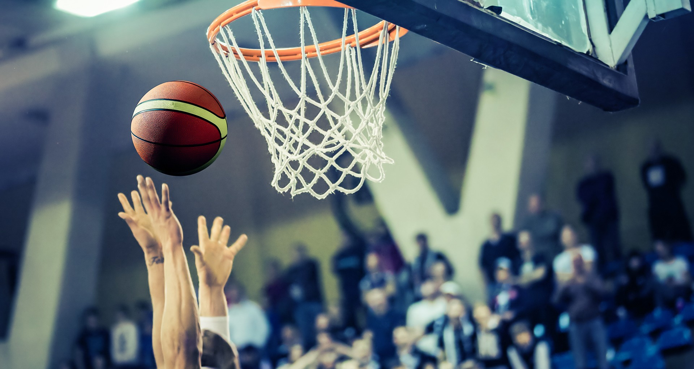

Reglas básicas del basquetbol
En la actualidad existen diferentes reglas del baloncesto profesional según el tipo de asociación. Las principales son las de la Federación Internacional del Baloncesto (FIBA), la Asociación Nacional de Baloncesto (NBA por sus siglas en inglés) y la Asociación Nacional Deportiva Universitaria (NCAA por sus siglas en inglés), estas dos últimas en EE.UU.
Sin embargo, a nivel internacional se aplican las normas de la FIBA, las cuales exponemos a continuación.
En el juego
Cada equipo tiene doce miembros.
Durante cada turno de juego solo participan cinco jugadores.
Las sustituciones durante el partido son ilimitadas.
El juego se estructura en cuatro períodos de 10 minutos cada uno.
En caso de empate, el juego se extiende por cinco minutos hasta que uno de los equipos haga una anotación.
El jugador no puede dejar de driblar y luego driblar nuevamente.
Una vez que deja de driblar, al jugador solo se le permite dar dos pasos con balón en mano, en los que debe intentar un tiro o pasar el balón a otro jugador.
24 segundos: cada equipo tiene hasta 24 segundos para intentar anotar, una vez que toma posesión del balón.
Una vez que el equipo toma posesión del balón y pasa la línea media del campo, no puede devolverse.
Los jugadores ofensivos no pueden estar dentro del área restringida por más de tres segundos consecutivos.
Anotaciones
Una canasta o anotación equivale a tres puntos cuando se anota por fuera de la línea de tres puntos.
Una canasta o anotación equivale a dos puntos cuando se anota dentro de la línea de tres puntos.
Una canasta o anotación equivale a un punto cuando se anota un tiro libre.
Faltas
Se llama falta personal cuando hay contacto ilegal entre dos oponentes.
Un jugador es expulsado cuando acumula cinco faltas contra sus adversarios.
Las faltas cometidas durante un intento de tiro resultan en tiros libres otorgados, cuyo número corresponderá a la posición de tiro que intentaba el jugador.
Si el jugador intentaba tirar desde el interior del de la línea de tres puntos, recibe dos tiros libres; si intentaba desde el lado externo, recibe tres tiros libres.
Una vez que un equipo ha cometido un total de cuatro faltas, cada falta adicional dará lugar a dos tiros libres, aunque el jugador no estuviera intentando un tiro.
